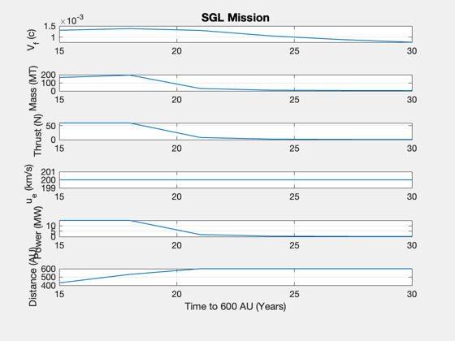
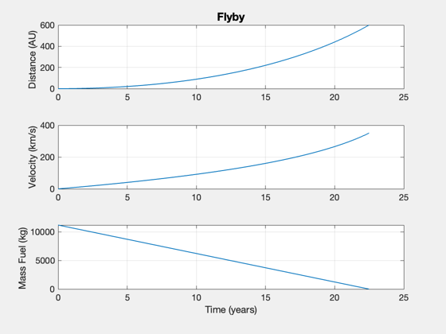

Mission to SGL beyond 550 AU
Use FlybyOptimal to analyse a solar gravity lens mission that must go beyond 550 AU. Best SNR is achieved at 650 AU or greater.
See also: StraightLineOptimal, FlybyOptimal, SimulateFlyby
Contents
%--------------------------------------------------------------------- % Copyright (c) 2017 Princeton Satellite Systems, Inc. % All rights reserved. %--------------------------------------------------------------------- payload = 1000; % kg nAU = 600; % number of AU aU = Constant('au'); c = Constant('speed of light'); year = 365*86400; nYear = 15:3:30; p = zeros(6,length(nYear)); d = Straight2DStructure; d.mP = payload; d.dF = nAU*aU; d.sigma = 1*1000; d.thrustRange = [0 60]; d.uEConst = 200; % constant uE works much better... d.uERange = [80 10000]; for k = 1:length(nYear) d.tF = nYear(k)*year; [uE, thrust, data] = FlybyOptimal( d ); fprintf(1,'\nStraight Line Flyby Demo to %10.0f AU:\n',nAU); fprintf(1,'Desired distance %12.2f AU\n',d.dF/aU); fprintf(1,'Travel time %12.2f years\n',d.tF/year); fprintf(1,'Payload %12.2f kg\n',d.mP); fprintf(1,'Specific Power %12.2f kW/kg\n',d.sigma/1000); fprintf(1,'Exhaust velocity %12.2f km/s\n--\n',uE); fprintf(1,'Thrust %12.2f N\n',thrust); fprintf(1,'Power %12.2f MW\n',data.p/1e6); fprintf(1,'Mass Dry %12.2f kg\n',data.mD); fprintf(1,'Mass Fuel %12.2f kg\n',data.mF); data.tF = d.tF; x = SimulateFlyby( data.mD, data.mF, thrust, uE, d.tF ); p(1,k) = x(2,end)/c; p(2,k) = (data.mD + data.mF)/1000; p(3,k) = thrust; p(4,k) = uE; p(5,k) = data.p/1e6; p(6,k) = x(1,end)/aU; end fprintf(1,'Final Velocity %12.4f c\n',x(2,end)/c); pL = {'V_{f} (c)', 'Mass (MT)' 'Thrust (N)', 'u_e (km/s)' 'Power (MW)' 'Distance (AU)'}; xL = sprintf('Time to %d AU (Years)',nAU); Plot2D(nYear,p,xL,pL,'SGL Mission');
thrust0 =
0.80225
First-order Norm of
Iter F-count f(x) Feasibility optimality step
0 2 3.192924e+03 5.342e+10 0.000e+00
1 4 1.082545e+04 3.494e+10 2.400e+03 2.792e+00
2 6 5.177396e+04 2.702e+10 1.927e+03 1.498e+01
3 8 1.644414e+05 2.543e+10 8.730e+02 4.122e+01
4 10 1.650048e+05 2.543e+10 8.856e+02 2.061e-01
5 12 1.650062e+05 2.543e+10 0.000e+00 5.152e-04
6 14 1.650069e+05 2.543e+10 4.547e-13 2.589e-04
7 16 1.650072e+05 2.543e+10 4.547e-13 1.301e-04
8 18 1.650074e+05 2.543e+10 9.095e-13 6.537e-05
9 20 1.650075e+05 2.543e+10 0.000e+00 3.285e-05
10 22 1.650076e+05 2.543e+10 6.939e-18 1.651e-05
11 24 1.650076e+05 2.543e+10 3.469e-18 8.295e-06
12 26 1.650076e+05 2.543e+10 0.000e+00 4.168e-06
13 28 1.650076e+05 2.543e+10 0.000e+00 2.095e-06
14 30 1.650076e+05 2.543e+10 4.547e-13 1.052e-06
15 32 1.650076e+05 2.543e+10 4.547e-13 5.289e-07
16 34 1.650076e+05 2.543e+10 0.000e+00 2.658e-07
17 36 1.650076e+05 2.543e+10 4.547e-13 1.335e-07
18 38 1.650076e+05 2.543e+10 0.000e+00 6.711e-08
19 40 1.650076e+05 2.543e+10 1.282e-31 3.372e-08
20 42 1.650076e+05 2.543e+10 4.547e-13 1.694e-08
21 44 1.650076e+05 2.543e+10 4.547e-13 8.515e-09
22 46 1.650076e+05 2.543e+10 2.034e-33 4.279e-09
Optimization stopped because the relative changes in all elements of x are
less than options.StepTolerance = 1.000000e-10, but the relative maximum constraint
violation, 4.760075e-01, exceeds options.ConstraintTolerance = 1.000000e-06.
Consider enabling the interior point method feasibility mode.
Warning: Did not converge: -2
Straight Line Flyby Demo to 600 AU:
Desired distance 600.00 AU
Travel time 15.00 years
Payload 1000.00 kg
Specific Power 1.00 kW/kg
Exhaust velocity 200.00 km/s
--
Thrust 60.00 N
Power 15.00 MW
Mass Dry 23095.60 kg
Mass Fuel 141912.00 kg
thrust0 =
0.55712
First-order Norm of
Iter F-count f(x) Feasibility optimality step
0 2 2.799581e+03 4.901e+10 4.547e-13
1 4 7.397138e+03 2.741e+10 2.592e+03 1.423e+00
2 6 2.041697e+04 1.655e+10 1.561e+03 4.031e+00
3 8 7.020428e+04 1.151e+10 2.054e+03 1.541e+01
4 10 1.941861e+05 1.011e+10 3.072e+03 3.838e+01
5 12 1.948060e+05 1.010e+10 3.073e+03 1.919e-01
6 14 1.948076e+05 1.010e+10 0.000e+00 4.798e-04
7 16 1.948083e+05 1.010e+10 0.000e+00 2.411e-04
8 18 1.948087e+05 1.010e+10 4.547e-13 1.211e-04
9 20 1.948089e+05 1.010e+10 4.547e-13 6.088e-05
10 22 1.948090e+05 1.010e+10 9.095e-13 3.059e-05
11 24 1.948091e+05 1.010e+10 2.993e-26 1.537e-05
12 26 1.948091e+05 1.010e+10 7.519e-27 7.724e-06
13 28 1.948091e+05 1.010e+10 4.547e-13 3.881e-06
14 30 1.948091e+05 1.010e+10 4.747e-28 1.950e-06
15 32 1.948091e+05 1.010e+10 4.547e-13 9.801e-07
16 34 1.948091e+05 1.010e+10 4.547e-13 4.925e-07
17 36 1.948091e+05 1.010e+10 4.547e-13 2.475e-07
18 38 1.948091e+05 1.010e+10 5.421e-20 1.244e-07
19 40 1.948091e+05 1.010e+10 2.711e-20 6.249e-08
20 42 1.948091e+05 1.010e+10 0.000e+00 3.140e-08
21 44 1.948091e+05 1.010e+10 4.547e-13 1.578e-08
22 46 1.948091e+05 1.010e+10 7.537e-33 7.929e-09
23 48 1.948091e+05 1.010e+10 0.000e+00 3.984e-09
Optimization stopped because the relative changes in all elements of x are
less than options.StepTolerance = 1.000000e-10, but the relative maximum constraint
violation, 2.061856e-01, exceeds options.ConstraintTolerance = 1.000000e-06.
Consider enabling the interior point method feasibility mode.
Warning: Did not converge: -2
Straight Line Flyby Demo to 600 AU:
Desired distance 600.00 AU
Travel time 18.00 years
Payload 1000.00 kg
Specific Power 1.00 kW/kg
Exhaust velocity 200.00 km/s
--
Thrust 60.00 N
Power 15.00 MW
Mass Dry 24514.72 kg
Mass Fuel 170294.40 kg
thrust0 =
0.40931
First-order Norm of
Iter F-count f(x) Feasibility optimality step
0 2 2.525443e+03 4.528e+10 0.000e+00
1 4 5.563341e+03 2.162e+10 2.696e+03 8.151e-01
2 6 1.080697e+04 9.540e+09 1.097e+03 1.407e+00
3 8 1.817785e+04 3.613e+09 5.291e+01 1.978e+00
4 10 2.539707e+04 9.728e+08 1.401e+03 1.937e+00
5 12 2.903644e+04 1.160e+08 2.506e+02 9.765e-01
6 14 2.959612e+04 2.089e+06 6.599e+01 1.502e-01
7 16 2.960657e+04 7.023e+02 1.140e-01 2.804e-03
8 18 2.960657e+04 1.221e-04 1.718e-03 9.431e-07
Optimization completed: The relative first-order optimality measure, 4.610381e-07,
is less than options.OptimalityTolerance = 1.000000e-06, and the relative maximum constraint
violation, 2.695984e-15, is less than options.ConstraintTolerance = 1.000000e-06.
Straight Line Flyby Demo to 600 AU:
Desired distance 600.00 AU
Travel time 21.00 years
Payload 1000.00 kg
Specific Power 1.00 kW/kg
Exhaust velocity 200.00 km/s
--
Thrust 7.68 N
Power 1.92 MW
Mass Dry 4189.79 kg
Mass Fuel 25416.78 kg
thrust0 =
0.31338
First-order Norm of
Iter F-count f(x) Feasibility optimality step
0 2 2.323571e+03 4.209e+10 0.000e+00
1 4 4.465435e+03 1.721e+10 2.732e+03 5.071e-01
2 6 6.946102e+03 5.369e+09 7.143e+02 5.873e-01
3 8 8.575262e+03 8.992e+08 4.721e+02 3.857e-01
4 10 8.968647e+03 3.474e+07 1.164e+02 9.314e-02
5 12 8.985091e+03 5.596e+04 1.319e+00 3.893e-03
6 14 8.985118e+03 1.478e-01 7.675e-04 6.292e-06
Optimization completed: The relative first-order optimality measure, 1.817287e-07,
is less than options.OptimalityTolerance = 1.000000e-06, and the relative maximum constraint
violation, 3.511344e-12, is less than options.ConstraintTolerance = 1.000000e-06.
Straight Line Flyby Demo to 600 AU:
Desired distance 600.00 AU
Travel time 24.00 years
Payload 1000.00 kg
Specific Power 1.00 kW/kg
Exhaust velocity 200.00 km/s
--
Thrust 1.89 N
Power 0.47 MW
Mass Dry 1830.39 kg
Mass Fuel 7154.73 kg
thrust0 =
0.24761
First-order Norm of
Iter F-count f(x) Feasibility optimality step
0 2 2.168770e+03 3.932e+10 0.000e+00
1 4 3.752880e+03 1.384e+10 2.721e+03 3.356e-01
2 6 5.069626e+03 3.033e+09 4.538e+02 2.790e-01
3 8 5.541754e+03 2.175e+08 6.020e+01 1.000e-01
4 10 5.581054e+03 1.286e+06 3.844e+00 8.326e-03
5 12 5.581289e+03 4.544e+01 3.842e-03 4.981e-05
Optimization completed: The relative first-order optimality measure, 8.139675e-07,
is less than options.OptimalityTolerance = 1.000000e-06, and the relative maximum constraint
violation, 1.155457e-09, is less than options.ConstraintTolerance = 1.000000e-06.
Straight Line Flyby Demo to 600 AU:
Desired distance 600.00 AU
Travel time 27.00 years
Payload 1000.00 kg
Specific Power 1.00 kW/kg
Exhaust velocity 200.00 km/s
--
Thrust 0.97 N
Power 0.24 MW
Mass Dry 1449.24 kg
Mass Fuel 4132.05 kg
thrust0 =
0.20056
First-order Norm of
Iter F-count f(x) Feasibility optimality step
0 2 2.046321e+03 3.690e+10 9.095e-13
1 4 3.261654e+03 1.125e+10 2.679e+03 2.330e-01
2 6 4.023127e+03 1.745e+09 2.896e+02 1.460e-01
3 8 4.188456e+03 5.613e+07 3.682e+01 3.169e-02
4 10 4.194132e+03 6.177e+04 6.781e-01 1.088e-03
5 12 4.194139e+03 7.571e-02 1.273e-04 1.200e-06
Optimization completed: The relative first-order optimality measure, 2.439740e-08,
is less than options.OptimalityTolerance = 1.000000e-06, and the relative maximum constraint
violation, 2.051684e-12, is less than options.ConstraintTolerance = 1.000000e-06.
Straight Line Flyby Demo to 600 AU:
Desired distance 600.00 AU
Travel time 30.00 years
Payload 1000.00 kg
Specific Power 1.00 kW/kg
Exhaust velocity 200.00 km/s
--
Thrust 0.61 N
Power 0.15 MW
Mass Dry 1297.88 kg
Mass Fuel 2896.26 kg
Final Velocity 0.0008 c
 Simulate one example
d.tF = mean(nYear)*year; [uE, thrust, data] = FlybyOptimal( d ); SimulateFlyby( data.mD, data.mF, thrust, uE, d.tF ); %-------------------------------------- % $Id: 24cd2517373ae8a5db3e96f29d3efac508b437cc $
thrust0 =
0.35656
First-order Norm of
Iter F-count f(x) Feasibility optimality step
0 2 2.417380e+03 4.362e+10 0.000e+00
1 4 4.950757e+03 1.927e+10 2.721e+03 6.373e-01
2 6 8.497434e+03 7.164e+09 8.901e+02 8.922e-01
3 8 1.182487e+04 1.827e+09 6.819e+02 8.371e-01
4 10 1.335297e+04 1.905e+08 2.379e+02 3.844e-01
5 12 1.355143e+04 2.539e+06 3.674e+01 4.992e-02
6 14 1.355414e+04 4.630e+02 1.557e-01 6.836e-04
7 16 1.355415e+04 9.155e-05 2.376e-03 1.247e-07
Optimization completed: The relative first-order optimality measure, 5.977092e-07,
is less than options.OptimalityTolerance = 1.000000e-06, and the relative maximum constraint
violation, 2.098712e-15, is less than options.ConstraintTolerance = 1.000000e-06.
Final position simulation 600.00 Distance (AU)
Final velocity simulation 350.48 km/s
Final time simulation 22.48 year
